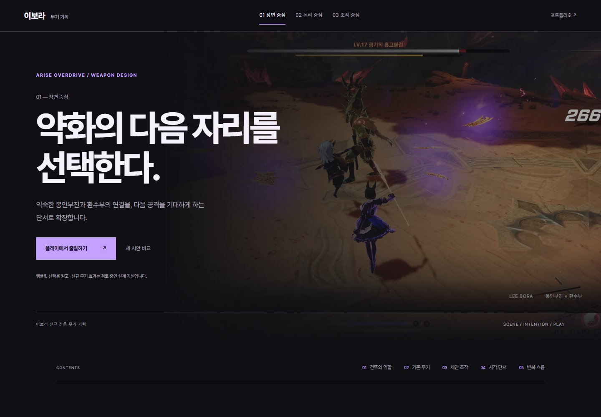
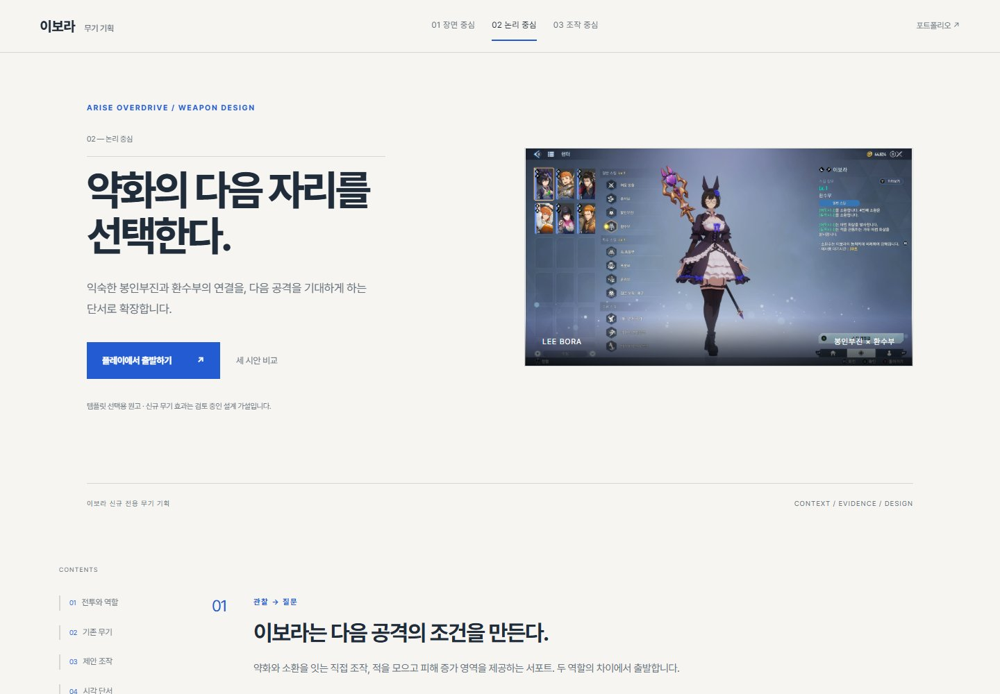
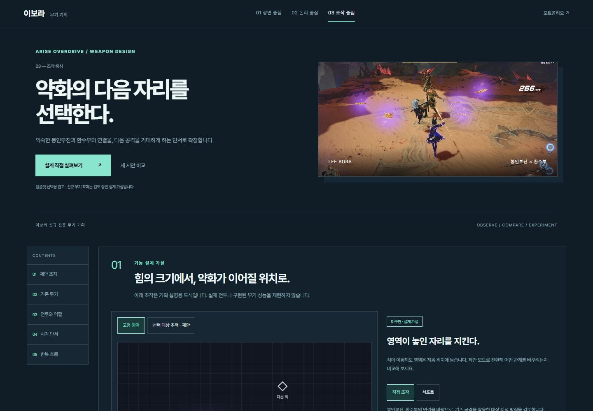

전체 시안 열기 ↗01 / CINEMA
장면 중심
크게 보는 플레이 화면에서 시작해, 스크롤하며 의도와 설계를 따라갑니다.
- 깊은 보라 · 큰 제목 · 넓은 여백
- 전투 장면 → 관찰 → 기능 설계
ARISE OVERDRIVE · 이보라 신규 무기 기획
장면에 몰입하거나, 근거를 따라 읽거나, 직접 조작하며 이해하거나.
같은 원고와 플레이 자료를 세 가지 구성으로 펼쳤습니다.

전체 시안 열기 ↗01 / CINEMA
크게 보는 플레이 화면에서 시작해, 스크롤하며 의도와 설계를 따라갑니다.

전체 시안 열기 ↗02 / EDITORIAL
기획자의 판단과 실제 근거를 함께 읽도록, 문서의 구조와 화면의 리듬을 결합합니다.

전체 시안 열기 ↗03 / INTERACTIVE LAB
영역의 방식과 대상을 바꿔 보고, 그 차이를 근거 자료와 대조하며 이해합니다.
SIDE BY SIDE
각 화면 안에서 스크롤하며 구성과 조작을 비교할 수 있습니다.
좁은 화면에서는 위아래로 표시됩니다. 전체 데스크톱 구성은 각 시안을 별도로 열어 확인해 주세요.
ONE DESIGN SYSTEM / MANY STORIES
선택 후에는 이 디자인의 서체·여백·색상과 요소를 재사용 가능한 템플릿으로 분리합니다. 다른 프로젝트에서는 내용과 자료를 바꾸고 필요한 요소를 골라 구성하는 방식입니다.
현재는 디자인과 상호작용을 선택하는 시안입니다. 자유 배치·크기·속성 편집 기능은 다음 단계에서 구성합니다.